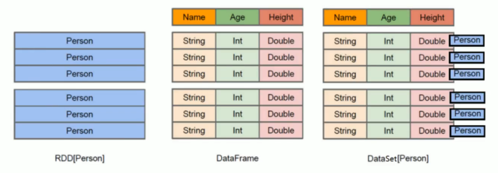
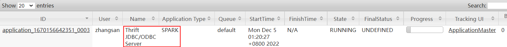
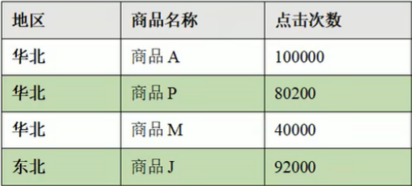

Spark DataFrame & Spark SQL¶
环境初始化¶
val conf = new SparkConf().setAppName("Spark SQL").setMaster("local[*]")
val spark = SparkSession.builder().config(conf).getOrCreate()
import spark.implicits._
测试数据¶
spark项目 - org.apache.spark.spark-examples_2.11模块下自带的测试数据。
DataFrame构造¶
import org.apache.spark.sql._
import org.apache.spark.sql.types._
val sparkSession = new org.apache.spark.sql.SparkSession(sc)
val schema =
StructType(StructField("name", StringType, false)::StructField("age", IntegerType, true) :: Nil)
val people = sc.textFile("people.txt").map(_.split(",")).map(p => Row(p(0), p(1).trim.toInt))
val dataFrame = sparkSession.createDataFrame(people, schema)
DataFrame读取与保存¶
读取¶
-
spark.read.format("json").load("/employees.json") -
spark.read.json("/employees.json") -
spark.read.load("/people.parquet")//只能读parquet类型的文件
保存¶
df.write.format("csv").save("/target/employees.csv")df.write.json("/target/employees.json")df.write.save("/target/user.csv")// 只能保存为parquet类型的文件
其他参数¶
Mode¶
Option¶
读取CSV文件时，指定分隔符、表头等¶
// 指定读取参数
scala> spark.read.option("sep",";").option("header","true").option("inferSchema","true").csv("/people.csv").show
读取MySQL时，指定连接字符串¶
df.write
.format("jdbc")
.option("url", "jdbc:mysql://localhost:3306/data_etl?serverTimezone=Asia/Shanghai")
.option("dbtable", "test")
.option("user", "root")
.option("password", "123456")
.mode(SaveMode.Append)
.save()
//记得在maven中添加mysql-connector-java依赖
scala> spark.read.format("jdbc").option("url","jdbc:mysql://192.168.179.1/data_etl").option("dbtable","salary").option("user","root").option("password","123456").load.show()
+----+----+----------+-----+
|姓名|性别| QQ| 工资|
+----+----+----------+-----+
|张三|null| 123456| 6000|
|李四| F| 123456789| 2900|
|王五| M|882993ad23|21000|
|赵六| F| 2222222| 5000|
|孙七| M| 125| 4100|
+----+----+----------+-----+
DSL与SQL¶
领域特定语言(DSL, Domain Specified Language)
小练习¶
数据¶
{"id": 1, "name": "Ella", "age": "36"}
{"id": 2, "name": "Bob", "age": "29"}
{"id": 3, "name": "Jack", "age": "29"}
{"id": 4, "name": "Jim", "age": "28"}
{"id": 4, "name": "Jim", "age": "28"}
{"id": 5, "name": "Damon"}
{"id": 5, "name": "Damon"}
问题¶
- 打印
DataFrame的Schema - 查询总记录数
- 查询所有数据
- 查询所有数据，去除重复数据；
- 查询所有数据，打印时去除
id字段 - 筛选出
age>30的员工记录 - 将数据按照年龄分组，统计每组的人数
- 将数据按
age升序排列 - 将数据按
age降序排列 - 取出前
3行数据 - 查询所有记录的
name列，并为列取别名为username - 查询年龄
age的平均值（null不参与计算） - 查询年龄
age的最小值
DSL¶
# 1. 打印DataFrame的Schema
scala> df.printSchema
# 2. 查询总记录数
scala> df.count
# 3. 查询所有数据
scala> df.select("*").show
# 4. 查询所有数据，去除重复数据；
scala> df.distinct.show
# 5. 查询所有数据，打印时去除id字段
scala> df.distinct().select("name","age").show()
# 6. 筛选出age>30的员工记录
scala> df.distinct.filter("age>30").show
# 7. 将数据按照年龄分组，统计每组的人数
scala> df.distinct.groupBy("age").count.show
# 8. 将数据按age升序排列
scala> df.distinct.sort("age").show
# 9. 将数据按age降序排列
scala> df.distinct.orderBy($"age".desc).show
# 10. 取出前3行数据
scala> df.show(3)
# 11. 查询所有记录的name列，并为列取别名为username
scala> df.select($"name".as("username")).show
# 12. 查询年龄age的平均值（null不参与计算）
scala> df.distinct.select(avg("age")).show
# 13. 查询年龄age的最小值
scala> df.select(min("age")).show
注意，上面的
$是一个函数，需要import spark.implicits._
SQL¶
scala> df.createTempView("people")
scala> df.createOrReplaceTempView("people")
scala> df.createOrReplaceGlobalTempView("people")
scala> spark.newSession.sql("select * from global_temp.people").show
scala> spark.sql("select * from people").show
scala> sql("select count(*) from people").show
scala> sql("select distinct(*) from people").show
... ...
直接将文件作为查询数据源¶
scala> spark.sql("select * from json.`/resources/people.json`").show
22/12/02 07:55:47 WARN metastore.ObjectStore: Failed to get database json, returning NoSuchObjectException
+----+-------+
| age| name|
+----+-------+
|null|Michael|
| 30| Andy|
| 19| Justin|
+----+-------+
scala> spark.sql("select * from parquet.`/resources/users.parquet`").show
22/12/02 07:57:02 WARN metastore.ObjectStore: Failed to get database parquet, returning NoSuchObjectException
+------+--------------+----------------+
| name|favorite_color|favorite_numbers|
+------+--------------+----------------+
|Alyssa| null| [3, 9, 15, 20]|
| Ben| red| []|
+------+--------------+----------------+
RDD|DataFrame|DataSet¶

- Spark 1.0 RDD
- Spark 1.3 DataFrame
- Spark 1.6 DataSet
隐式转换¶
此处
spark不是包名，而是SparkSession类对象spark的名字。
DataFram与DataSet的区别¶
DataSet是具有强类型的数据集合，可以直接访问元素的属性如item.prop。
PersonRDD¶
scala> val personRDD = spark.sparkContext.parallelize(List(("zhangsan",10),("lisi",20),("wangwu",30)))
PersonDF¶
scala> val personDF = personRDD.toDF("name","age")
personDF: org.apache.spark.sql.DataFrame = [name: string, age: int]
val personDF: DataFrame = personRDD.map(x => Person(x._1, x._2)).toDF()
PersonDS¶
scala> case class Person(name:String, age:Int) //样例类，样例类不能放在与toDS相同的方法内。
defined class Person
scala> val personDS = personRDD.map(t=>Person(t._1,t._2)).toDS
personDS: org.apache.spark.sql.Dataset[Person] = [name: string, age: int]
按属性取值¶
scala> personDF.foreach(p=>println(p.name))
<console>:26: error: value name is not a member of org.apache.spark.sql.Row
personDF.foreach(p=>println(p.name)) // 失败
scala> personDF.foreach(p=>println(p(0))) //只能按索引取值
zhangsan
lisi
wangwu
scala> personDS.foreach(p=>println(p.name))
wangwu
lisi
zhangsan
即使把
Person构成的RDD转换成DF
val personDF = personRDD.map(t=>Person(t._1,t._2)).toDF此处仍无法使用
p.name取值。
DataFrame与DataSet互转¶
scala> personDF.as[Person]
res84: org.apache.spark.sql.Dataset[Person] = [name: string, age: int]
scala> personDS.toDF
res88: org.apache.spark.sql.DataFrame = [name: string, age: int]
DataFrame、DataSet转RDD¶
用户自定义函数UDF¶
需求¶
输出PersonDF中的所有记录，姓名格式化输出，格式为： Name: zhangan
+--------------------+---+
|UDF:prefixName(name)|age|
+--------------------+---+
| name:zhangsan| 10|
| name:lisi| 20|
| name:wangwu| 30|
+--------------------+---+
尝试一下：
scala> personDF.createOrReplaceTempView("person")
scala> spark.sql("select "name:"+name,age from person")
<console>:1: error: identifier expected but string literal found.
结果提示ERROR。
UDF定义¶
UDF: UserDefinedFunction
scala> spark.udf.register("prefixName",(name:String)=>("name:"+name))
res101: org.apache.spark.sql.expressions.UserDefinedFunction = UserDefinedFunction(<function1>,StringType,Some(List(StringType)))
UDF使用¶
scala> spark.sql("select prefixName(name),age from person").show
+--------------------+---+
|UDF:prefixName(name)|age|
+--------------------+---+
| name:zhangsan| 10|
| name:lisi| 20|
| name:wangwu| 30|
+--------------------+---+
用户自定义聚合函数UDAF¶
梳理¶
初始值¶
-
var total = 0
-
var count = 0
缓冲区¶
- total = total + row
- count = count + 1
平均值¶
- total / count
具体代码¶
DataFrame¶
main¶
df.createOrReplaceTempView("person")
spark.udf.register("ageAvg",new AvgUDAD())
spark.sql("select ageAvg(age) from person").show
AvgUDAD¶
class AvgUDAD extends UserDefinedAggregateFunction {
//输入数据类型
override def inputSchema: StructType = {
StructType(Array(StructField("age", LongType)))
}
override def bufferSchema: StructType = {
StructType(Array(StructField("total", LongType), StructField("count", LongType)))
}
//返回值类型
override def dataType: DataType = LongType
//确定性
override def deterministic: Boolean = true
override def initialize(buffer: MutableAggregationBuffer): Unit = {
buffer(0) = 0L //total
buffer(1) = 0L //count
// buffer.update(0,0L)
// buffer.update(1,0L)
}
//缓冲区
override def update(buffer: MutableAggregationBuffer, input: Row): Unit = {
buffer.update(0,buffer.getLong(0)+input.getLong(0)) //total
buffer.update(1,buffer.getLong(1)+1) // count
}
//分布式数据集，可能有多个缓冲区，将多个缓冲区合并
override def merge(buffer1: MutableAggregationBuffer, buffer2: Row): Unit = {
buffer1.update(0, buffer1.getLong(0)+buffer2.getLong(0)) //total
buffer1.update(1, buffer1.getLong(1)+buffer2.getLong(1)) //count
}
// 计算平均值
override def evaluate(buffer: Row): Any = {
buffer.getLong(0)/buffer.getLong(1) //total/count
}
}
UDAF-强类型(DSL)¶
DF转DS¶
因为DataFrame不支持强类型，将DF转为DataSet
UDAF类¶
// 缓冲区类
case class Buff(var total: Long, var count: Long)
//根据 in, buffer, out 构造 聚合类 AvgUDAD
class AvgUDAD extends Aggregator[Person, Buff, Long] {
override def zero: Buff = Buff(0L, 0L)
override def reduce(b: Buff, a: Person): Buff = {
b.total = b.total + a.age
b.count = b.count + 1
b
}
override def merge(b1: Buff, b2: Buff): Buff = {
b1.total = b1.total+b2.total
b1.count = b1.count+b2.count
b1
}
override def finish(reduction: Buff): Long = reduction.total/reduction.count
// 缓冲区编码
override def bufferEncoder: Encoder[Buff] = Encoders.product
// 输出编码
override def outputEncoder: Encoder[Long] = Encoders.scalaLong
}
使用UDAF¶
// 将UDAF类转换为查询的列对象
val column: TypedColumn[Person, Long] = new AvgUDAD().toColumn
ds.select(column).show()
UDAF-强类型(SQL)¶
SQL是弱类型操作，Aggregator是强类型操作，Spark2.x中不支持两者的结合使用。Spark 3.0中可以使用SQL结合强类型的UDAF，使用functions.udaf(new AvgUDAD())进行转换。
缓冲区类¶
UDAF¶
//根据 in, buffer, out 构造 聚合类 AvgUDAD
class AvgUDAD extends Aggregator[Long, Buff, Long] {
override def zero: Buff = Buff(0L, 0L)
override def reduce(b: Buff, a: Long): Buff = {
b.total = b.total + a
b.count = b.count + 1
b
}
override def merge(b1: Buff, b2: Buff): Buff = {
b1.total = b1.total+b2.total
b1.count = b1.count+b2.count
b1
}
override def finish(reduction: Buff): Long = reduction.total/reduction.count
// 缓冲区编码
override def bufferEncoder: Encoder[Buff] = Encoders.product
// 输出编码
override def outputEncoder: Encoder[Long] = Encoders.scalaLong
}
使用UDAF¶
df.createOrReplaceTempView("person")
spark.udf.register("ageAvg", functions.udaf(new AvgUDAD())) //调用方式发生了变化
spark.sql("select ageAvg(age) from person").show
Spark内置Hive¶
临时表¶
scala> val df = spark.read.json("/resources/employees.json")
df: org.apache.spark.sql.DataFrame = [name: string, salary: bigint]
scala> df.createOrReplaceTempView("employees")
scala> spark.sql("show tables").show
+--------+---------+-----------+
|database|tableName|isTemporary|
+--------+---------+-----------+
| default| bigdata| false|
| |employees| true|
+--------+---------+-----------+
创建表¶
scala> spark.sql("create table bigdata(id int)")
22/12/02 08:17:25 WARN metastore.HiveMetaStore: Location: file:/home/zhangsan/spark-warehouse/bigdata specified for non-external table:bigdata
res28: org.apache.spark.sql.DataFrame = []
scala> spark.sql("show tables").show
+--------+---------+-----------+
|database|tableName|isTemporary|
+--------+---------+-----------+
| default| bigdata| false|
+--------+---------+-----------+
此操作，会在用户目录下创建一个名字为spark-warehouse的目录。
准备数据¶
加载数据¶
查询表¶
操作外置Hive¶
Hive安装¶
略。
配置¶
服务器环境配置¶
hive-site.xml¶
复制到SPARK_HOME/conf/目录内
mysql-connector-driver¶
复制到SPARK_HOME/jars/目录内
开发环境配置¶
jar包¶
<dependency>
<groupId>org.apache.spark</groupId>
<artifactId>spark-hive_${scala.binary.version}</artifactId>
<version>2.4.8</version>
</dependency>
<dependency>
<groupId>mysql</groupId>
<artifactId>mysql-connector-java</artifactId>
<version>8.0.29</version>
</dependency>
resources¶
将文件$HIVE_HOME/conf/hive-site.xml，放到项目的resources目录中。
启用HiveSupport¶
val spark = SparkSession.builder().enableHiveSupport().config(conf).getOrCreate()
spark.sql("show tables").show()
操作¶
scala> sql("show tables").show
+--------+---------+-----------+
|database|tableName|isTemporary|
+--------+---------+-----------+
| default| bigdata| false|
| default| student| false|
+--------+---------+-----------+
此处的student表来自于hive文档。
Spark-SQL¶
展示不美观，而且每次启动都会产生一个Application。
Beeline¶
Hadoop¶
core-site.xml¶
<property>
<name>hadoop.proxyuser.zhangsan.hosts</name>
<value>*</value>
</property>
<property>
<name>hadoop.proxyuser.zhangsan.groups</name>
<value>*</value>
</property>
spark¶
启动thriftserver¶
启动后，可以在YARN WebUI界面看到此应用程序

服务端口： 10000
beeline连接thriftserver¶
[zhangsan@node1 default]$ bin/beeline -u jdbc:hive2://node2:10000 -n zhangsan
Connecting to jdbc:hive2://node2:10000
22/12/04 00:55:44 INFO jdbc.Utils: Supplied authorities: node2:10000
22/12/04 00:55:44 INFO jdbc.Utils: Resolved authority: node2:10000
22/12/04 00:55:44 INFO jdbc.HiveConnection: Will try to open client transport with JDBC Uri: jdbc:hive2://node2:10000
Connected to: Apache Hive (version 2.3.9)
Driver: Hive JDBC (version 1.2.1.spark2)
Transaction isolation: TRANSACTION_REPEATABLE_READ
Beeline version 1.2.1.spark2 by Apache Hive
beeline使用¶
beeline退出¶
项目实践¶
实验数据¶
产品信息表：product_info
城市信息表：city_info
用户访问表： user_visit_action
需求¶
计算各地区中点击量排名前三的商品。

创建数据库¶
0: jdbc:hive2://node2:10000> create database sale;
No rows affected (2.248 seconds)
0: jdbc:hive2://node2:10000> show databases;
+----------------+--+
| database_name |
+----------------+--+
| default |
| sale |
+----------------+--+
2 rows selected (0.649 seconds)
准备数据¶
创建表，载入数据：
val sparkConf = new SparkConf().setMaster("local[*]").setAppName("sparkSQL")
val spark = SparkSession.builder().enableHiveSupport().config(sparkConf).getOrCreate()
spark.sql("use sale")
// 准备数据
spark.sql(
"""
|CREATE TABLE `user_visit_action`(
| `date` string,
| `user_id` bigint,
| `session_id` string,
| `page_id` bigint,
| `action_time` string,
| `search_keyword` string,
| `click_category_id` bigint,
| `click_product_id` bigint,
| `order_category_ids` string,
| `order_product_ids` string,
| `pay_category_ids` string,
| `pay_product_ids` string,
| `city_id` bigint)
|row format delimited fields terminated by '\t'
""".stripMargin)
spark.sql(
"""
|load data local inpath 'datas/user_visit_action.txt' into table sale.user_visit_action
""".stripMargin)
spark.sql(
"""
|CREATE TABLE `product_info`(
| `product_id` bigint,
| `product_name` string,
| `extend_info` string)
|row format delimited fields terminated by '\t'
""".stripMargin)
spark.sql(
"""
|load data local inpath 'datas/product_info.txt' into table sale.product_info
""".stripMargin)
spark.sql(
"""
|CREATE TABLE `city_info`(
| `city_id` bigint,
| `city_name` string,
| `area` string)
|row format delimited fields terminated by '\t'
""".stripMargin)
spark.sql(
"""
|load data local inpath 'datas/city_info.txt' into table sale.city_info
""".stripMargin)
计算各地区排名前三的商品¶
val conf = new SparkConf().setAppName("Spark SQL").setMaster("local[*]")
val spark = SparkSession.builder().enableHiveSupport().config(conf).getOrCreate()
import spark.implicits._
spark.sql("use sale")
// 表连接，[ area(city_info), product_name(product_info), click_product_id(user_visit_action)]
// 根据 count(click_product_id) 得到click_count
spark.sql(
"""
|SELECT
| u.user_id,
| c.area,
| c.city_name,
| p.product_name
|FROM
| user_visit_action u
|JOIN city_info c ON u.city_id = c.city_id
|JOIN product_info p ON p.product_id = u.click_product_id
|""".stripMargin).createOrReplaceTempView("sale_info")
// 分组[area, product_name]，点击量统计
spark.sql(
"""
|select area, product_name, count(*) as click_count from sale_info GROUP BY area, product_name
|""".stripMargin).createOrReplaceTempView("area_product_count")
// 根据area点击量排名
spark.sql(
"""
|select *, rank() over(partition by area order by click_count desc) as rank
|from area_product_count
|""".stripMargin).createOrReplaceTempView("area_product_count_rank")
// 选取前三
spark.sql(
"""
|select * from area_product_count_rank
|where rank <= 3
|""".stripMargin).show(false)
spark.close()